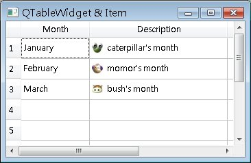

QTableWidget可以顯示一個表格元件，表格中每個儲存格則為一個QTableWidgetItem的實例，QTableWidgetItem要安插至表格中哪個儲存格，則是依索引的指定來決定。
下面的程式碼為簡單的QTableWidget與QTableWidgetItem的示範：
#include <QApplication>
#include <QTableWidget>
#include <QHBoxLayout>
int main(int argc, char *argv[]) {
QApplication app(argc, argv);
QTableWidget *tableWidget = new QTableWidget;
tableWidget->setWindowTitle("QTableWidget & Item");
tableWidget->resize(350, 200);
tableWidget->setRowCount(10);
tableWidget->setColumnCount(5);
QStringList header;
header.append("Month");
header.append("Description");
tableWidget->setHorizontalHeaderLabels(header);
tableWidget->setItem(0, 0, new QTableWidgetItem("January"));
tableWidget->setItem(1, 0, new QTableWidgetItem("February"));
tableWidget->setItem(2, 0, new QTableWidgetItem("March"));
tableWidget->setItem(0, 1,
new QTableWidgetItem(QIcon("caterpillar_head.jpg"), "caterpillar's month"));
tableWidget->setItem(1, 1,
new QTableWidgetItem(QIcon("momor_head.jpg"), "momor's month"));
tableWidget->setItem(2, 1,
new QTableWidgetItem(QIcon("bush_head.jpg"), "bush's month"));
tableWidget->show();
return app.exec();
}
使用setItem()時必須指定儲存格索引值，索引為列（row）行（column），皆從0開始，最左上角即為索引（0, 0）位置。QTableWidgetItem也可以設置圖片或核取狀態（setCheckState()）等。
下圖為程式執行時的畫面：

|
|